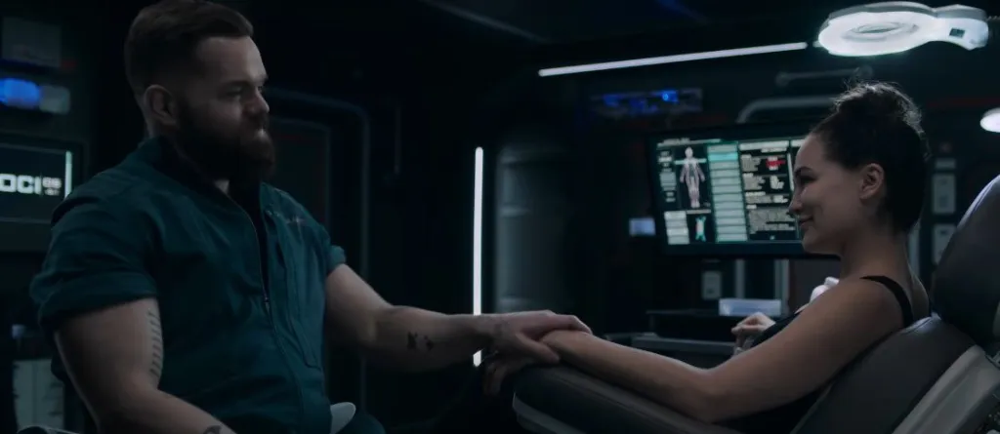
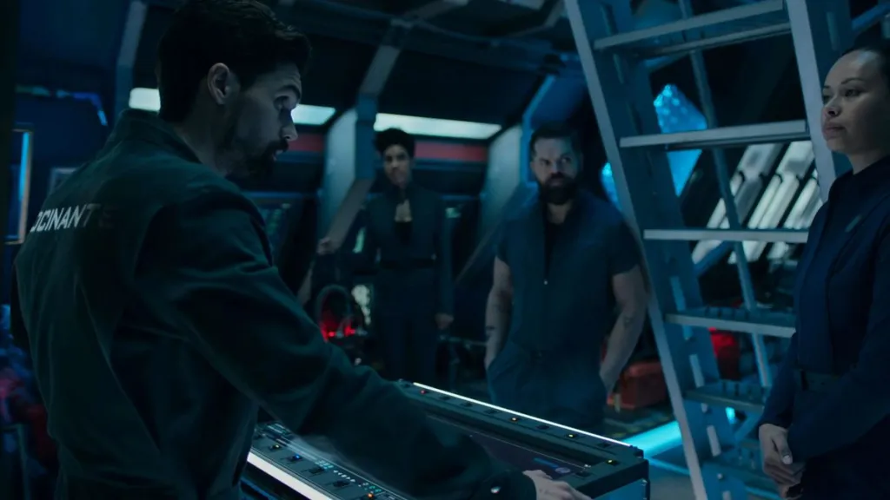
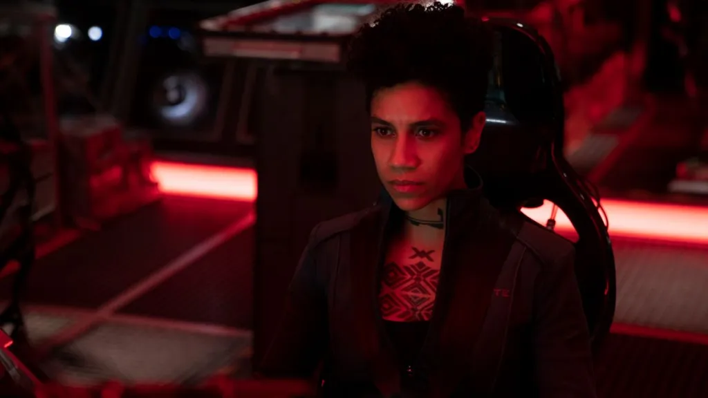
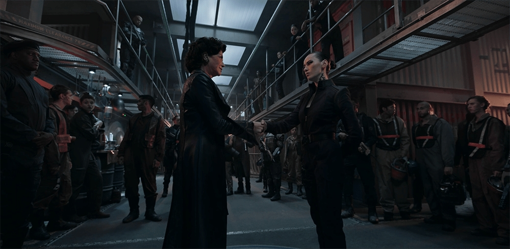

Opinion Writing | 1st in the State for Review Writing, Michigan Interscholastic Press Association
The Expanse Season 6 Review: Reason to Hope

January 2022 | thecityvoice.org/2022/01/20/the-expanse-season-6-review-reason-to-hope/
There’s a lot to unpack in the sixth, and apparently final, season of The Expanse, but the moment that stands out most to me is an understated one. Standing in the medical bay on Ceres Station, surrounded by the scars left on her home by a man she hates, Camina Drummer still tells her surviving family, “I never loved you because you were fighters. I loved you because you were builders.”
It’s a poignant echo of Drummer’s mentor, Fred Johnson, a man who believed that his life didn’t really begin until he stopped fighting and started building. And that idea, that ideal, is what made The Expanse unique. Among all the space operas competing for your attention, The Expanse was and remains one of the few with a different vision of what we should be fighting for.
“In the end, the only thing that matters is fighting for who’s covering your back.”
It doesn’t represent the self-serving, Machiavellian chess match of Dune, nor the out-of-the-box perfect world of Star Trek, nor even the good vs. evil revolutionary zeal of Star Wars, but the down in the trenches, gritty work of building a better world in a galaxy where the scars of the past too often feel more real than the hope of the present. As Naomi explains in her closing soliloquy, it’s a story about doing the right thing, even when nobody’s looking.
At first glance, that might seem an odd theme for a season that is admittedly the show’s most warlike yet. After spending all of last season laying the foundations of a conflict between the Inner Planets and the asteroid Belt, between oppressors and oppressed, and, most tragically, between mother and son, The Expanse doesn’t pull any punches in its final season of all out war between the Free Navy and the Combined Fleet.
As the Rocinante dives into battle as a mercenary gunship and Avasarala and Bobbie head to the front on UNN One, the show stays at full burn with visually astonishing space battles that put the characteristic Expanse brand of physics-realistic hard sci-fi on full display. Meanwhile, the journalist Monica Stuart, an unexpected addition to this season, finds her time in the spotlight putting a human face to the horrors of war. Deep in the black between stars, Camina Drummer, leader of a small but growing revolution against Marco’s war, resolves that she will not be forgotten. And on the command deck of the Pella, cracks in the facade of Free Navy strength widen as Filip Inaros, Naomi’s long lost son, begins to doubt the warpath his father has chosen for them.
Don’t expect an easy ending.
It’s a lot to pack into six episodes, and if I have one complaint about this season it’s that it sometimes feels breathless in its rush to finish a famously complicated and sprawling tale. There’s a lot more story to tell, three more books in fact, and the show could have used a full length season to develop the vignettes that feature more heavily in its source material, including the returns of fan favorite characters like Prax and Pastor Anna. That’s not to say it isn’t gripping, a Drummer-led space heist that I didn’t know I needed stands out as a particular high point, but the more human facets of The Expanse are sometimes starved for air in competition with the next action sequence.
Yet the writers make up for it with some truly emotional moments, from the meta-cinematic documentary Monica makes in an attempt to stop the brutality of the conflict, to Filip’s crisis of conscience over Free Navy tactics, to Naomi’s guilt at fighting against her people and her son. The Expanse has always been known for its powerful writing, but this season especially drives home the painful humanity of its heroes.
Naomi’s story remains the heart of the show.
Most haunting of all was the long awaited reunion between Camina Drummer and Naomi Nagata. Despite being the faces of the Belt, whose debate about Belters’ right to settle on the ring worlds at the beginning of Season 4 remains the show’s clearest representation of disagreement within the revolutionary cause, the two haven’t had a full scene together since their time on the Behemoth in Season 3.
I’m glad the writers chose to bring them back together before the end, if only because, as much as I love the rest of the Roci crew, as Inners Holden and the others can’t speak to the show’s most complicated ideas about oppression, injustice, and social change. It’s a brilliant scene, and the season’s most important, for one line: when a despairing Drummer says “this universe has no place for me,” the only possible response is “then we make one.”
“Never thought I’d see the day.”
That’s the lesson, the legacy, of The Expanse: that the pursuit of heroes is not fighting, but building, the never-ending, difficult work of making a world with a place for everyone, even when it may never be perfect. It’s a lesson our world needs right now, especially from a genre too often eager to glorify the ideas of great men and righteous violence.
So while I first came to The Expanse for its epic story, I leave admiring it for its vision of the future as a place much like the present, a place where the world is broken, but getting better. For all its darkness, it’s a show that asks us to care, to look up at the stars and build towards them, and to do so with love and forgiveness and above all compassion. With its final season it did exactly what it promised to do, it gave me reason to hope, and for that alone it remains one of the best shows I’ve ever seen.
The Expanse Season 6 is now streaming all episodes on Amazon Prime Video.